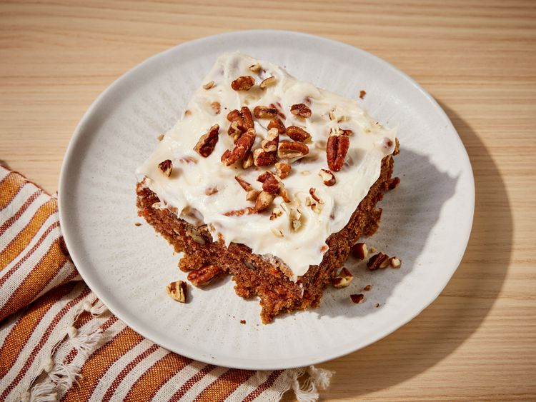

Carrot Cake

A great carrot cake can be one of the best desserts to serve, particularly
in the spring and fall, when carrots are in season. Even if you have the
best veggies, though, baking a moist, flavorful cake can be challenging.
Thankfully, there’s an ingredient that can help.
Carrot Cake Recipes to Try
Ingredients
- 2 cups white sugar
- 1 ¼ cups vegetable oil
- 4 large eggs
- 2 teaspoons vanilla extract
- 2 cups all-purpose flour
- 2 teaspoons baking soda
- 2 teaspoons baking powder
- 2 teaspoons ground cinnamon
- ½ teaspoon salt
- 3 cups grated carrots
- 1 cup chopped pecans (Optional)
Steps
-
Gather all ingredients. Preheat the oven to 350 degrees F (175 degrees
C). Grease and flour a 9x13-inch pan.
-
Beat sugar, oil, eggs, and 2 teaspoons vanilla together in a large bowl
with an electric mixer until well combined.
-
Mix in flour, baking soda, baking powder, cinnamon, and salt. Stir in
carrots, then fold in pecans.
- Pour into the prepared pan.
-
Bake in the preheated oven until a toothpick inserted into the center of
the cake comes out clean, about 40 minutes. Let cool in the pan for 10
minutes, then turn out onto a wire rack and cool completely.
-
To make the frosting: Beat butter, cream cheese, confectioners' sugar,
and 1 teaspoon vanilla together in a large bowl with an electric mixer
until smooth and creamy.
- Stir in chopped pecans.
- Frost the cooled cake. Serve and enjoy!
Back to Odin Recipes